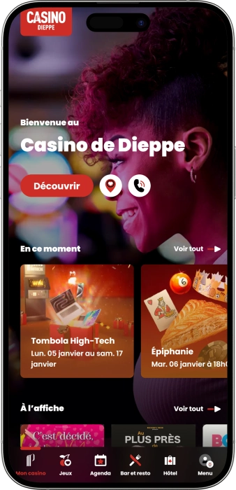

Offre de bienvenue exclusive de
Offre de bienvenue exclusive de
Casino de Dieppe — jeux, spectacles et détente face à la mer
Top casinos
Détails du bonus
Casino
Bonus
Note
Free Spins
Plus d'infos
Obtenir
Avantages
- Le Casino de Dieppe séduit par son ambiance balnéaire et son espace de jeux varié.
-
Vue panoramique sur la mer et la promenade
-
Horaires pratiques jusqu’à tard dans la nuit
-
Machines à sous avec jackpots progressifs attractifs
-
Roulettes électroniques pour des parties rapides
-
Tables classiques : blackjack, roulette, poker
-
Offres de jeu : freebets, matchs, tirages gagnants
-
Carte club : points, cadeaux, bonus personnalisés
- On peut enchaîner restaurant, machines, tables et spectacle sans changer de lieu. L’expérience est fluide, confortable, et pensée autant pour une sortie spontanée que pour une soirée complète.
Casino de Dieppe App


À propos Casino de Dieppe
Le casino se distingue par sa vue mer et une soirée “tout‑en‑un” : jeux, restaurant et spectacles au même endroit. L’offre est équilibrée entre machines, jeux électroniques et tables traditionnelles.
- Gains jusqu’à 10 000 € sur jackpots événementiels.
- Crédits bonus jusqu’à 30 € sur carte joueur.
- Tickets jusqu’à 5 000 € en tournois machines.
Le Casino de Dieppe est une adresse idéale pour une soirée animée au bord de la mer, mêlant jeux, confort et divertissement. L’ambiance y est à la fois balnéaire et énergique, parfaite pour passer de la promenade aux tables sans rupture. L’espace de jeux convient aux débutants comme aux joueurs réguliers, avec un rythme qui s’adapte à chacun.
Les salles sont pensées pour circuler facilement et varier les plaisirs au fil de la soirée. Les amateurs de tradition apprécient les jeux de table et leur convivialité. Ceux qui aiment les parties rapides se tournent volontiers vers les solutions électroniques. Entre deux sessions, on profite volontiers d’un bar ou d’un restaurant avec vue. La programmation d’animations donne un vrai relief au séjour. Le service met l’accent sur l’accueil et la tranquillité des visiteurs. Au final, l’expérience propose un équilibre agréable entre jeu, gastronomie et spectacle.
Casino de Dieppe : ambiance bord de mer, jeux et soirées spectacle
Le Casino de Dieppe accueille dans une atmosphère balnéaire, avec un confort moderne, une lumière soignée et une vraie sensation de sortie festive, surtout le soir. Le style reste dans une élégance européenne accessible, à la fois sobre et agréable, sans excès. Les espaces laissent respirer, ce qui permet de jouer tranquillement tout en profitant d’une énergie collective. L’ambiance convient aussi bien à une visite calme qu’à une soirée entre amis. Le contraste entre l’extérieur marin et le cocon intérieur fait partie du charme.
Côté horaires, l’établissement est pensé pour les rythmes tardifs : l’ouverture se fait généralement le matin et la fermeture intervient très tard dans la nuit, avec un prolongement fréquent le week‑end. Ce fonctionnement est idéal pour ceux qui arrivent après un dîner ou une animation. Certaines zones peuvent suivre un démarrage progressif : les formats rapides sont souvent disponibles plus tôt, tandis que les tables prennent plus d’ampleur en soirée. En période de fêtes ou d’événements, les horaires peuvent évoluer. Beaucoup de visiteurs aiment organiser leur sortie en fonction de la programmation du jour.
Les bars jouent un rôle central pour faire des pauses entre deux sessions : café, apéritif, cocktail, chacun trouve son rythme. On apprécie la rapidité du service et le fait de rester dans le même univers sans “couper” la soirée. Le soir, l’ambiance devient volontiers lounge, avec une musique douce et une lumière plus intime. C’est aussi un point de rendez‑vous naturel pour les groupes. Ces temps de respiration donnent un vrai équilibre à l’expérience.
L’hôtel rattaché au complexe constitue une option confortable pour prolonger le séjour et éviter les contraintes de retour tardif. L’idée est simple : dormir sur place, profiter de la plage, de la promenade et du centre à quelques pas. C’est un format “tout à proximité” : jeux, restauration, balades, et détente. Après un spectacle ou une longue soirée, la proximité de la chambre devient un avantage concret. Pour un week‑end, ce scénario offre un maximum de confort.
Les événements et divertissements donnent au lieu une dimension plus large qu’un simple espace de jeu : soirées à thème, animations, spectacles et temps forts saisonniers. La présence d’une salle de spectacle renforce l’identité culturelle du complexe et attire un public varié. Beaucoup de visiteurs construisent leur soirée autour d’un spectacle, puis prolongent avec le jeu et un moment au restaurant. Cette complémentarité rend l’expérience plus riche. Pour les voyageurs, c’est un gain de temps et de simplicité.
Les mécaniques de bonus et de fidélité reposent généralement sur une carte joueur : points, offres personnalisées, cadeaux et invitations. Cela valorise les habitués tout en restant simple à utiliser. Les avantages peuvent aussi toucher l’univers “hors jeu”, comme des attentions au bar ou des accès privilégiés à certains événements. L’objectif est de donner envie de revenir et de varier les plaisirs d’une visite à l’autre. Au final, le Casino de Dieppe se vit comme un véritable centre de sortie.
Service, paiements et gains au Casino de Dieppe : mode d’emploi
Le personnel du Casino de Dieppe travaille généralement avec une approche professionnelle : accueil, efficacité, et priorité à la sécurité. À l’entrée comme dans les salles, l’équipe oriente, explique les zones, et accompagne volontiers pour créer une carte joueur. Les débutants reçoivent souvent une aide simple : choix des mises, compréhension des écrans, règles essentielles. Aux tables, les croupiers gardent un rythme clair, appliquent les règles et veillent au respect de tous. Aux heures de pointe, l’ambiance s’accélère, mais l’organisation reste lisible.
La langue principale est le français, et l’anglais est souvent possible pour les échanges courants, notamment à l’accueil, à la caisse, au restaurant ou au bar. Même sans vocabulaire technique, on peut communiquer facilement grâce aux termes simples sur les mises, les jetons et l’encaissement. Les règles clés (âge, pièce d’identité, comportement) sont expliquées de façon directe. En cas de question ou de désaccord, l’équipe s’appuie sur les procédures internes et les dispositifs de sécurité. Cela apporte une vraie tranquillité d’esprit.
La devise utilisée est l’euro, et la plupart des paiements s’organisent autour de la caisse et des terminaux. Les moyens de paiement courants incluent généralement espèces et cartes bancaires, avec les réseaux les plus utilisés, et parfois des solutions complémentaires selon les opérations. Le restaurant et le bar disposent souvent de paiements simples et rapides, tandis que la caisse gère l’échange des jetons et les formalités. Pour le sans‑contact ou le partage d’addition, la résolution se fait fréquemment sur place. Conserver les justificatifs est conseillé en cas de montants importants.
Les distributeurs et le retrait d’espèces sont souvent placés à proximité pour éviter de quitter le site longtemps. Pour la monnaie et les petits montants, la caisse peut faciliter les échanges et fournir des coupures adaptées. Un bureau de change complet est moins fréquent, ce qui rend utile d’arriver avec des euros ou une carte. En cas de besoin, le personnel indique les solutions disponibles en ville. Il est prudent de vérifier à l’avance les plafonds bancaires et les frais de retrait.
L’encaissement des gains se fait via la caisse : conversion des jetons et des justificatifs machines en espèces, ou organisation d’un règlement dématérialisé si le montant est élevé. Selon la somme, une pièce d’identité et certaines informations peuvent être demandées pour respecter les procédures financières. Pour les gains importants, mieux vaut se renseigner sur les documents nécessaires afin d’éviter l’attente en fin de soirée. Le délai dépend généralement de l’affluence et du mode de paiement choisi. Pour le transport de grosses sommes, le virement peut être plus confortable.
Sur la fiscalité, la règle pratique à retenir est que les gains de jeux pour les particuliers ne sont généralement pas imposés comme un revenu courant, mais cela peut dépendre du statut du joueur, de la résidence fiscale et des obligations de déclaration dans le pays d’origine. Les non‑résidents doivent surtout penser aux règles de leur propre administration. En cas de gains très élevés ou de pratique régulière, une vérification auprès d’un conseiller fiscal est recommandée. Le casino applique, de son côté, des procédures d’identification et de contrôle financier. C’est une pratique standard de protection et de conformité.
Règles de visite du Casino de Dieppe : tenue, accès et infos pratiques
Le Casino de Dieppe fonctionne avec des règles d’accès claires afin de garantir confort et sécurité. L’entrée est réservée aux majeurs, et une pièce d’identité est généralement demandée à l’arrivée ou sur demande. La tenue doit être soignée : l’esprit est plutôt smart casual, surtout en soirée. Un comportement calme et respectueux est essentiel, car le personnel veille à l’ambiance générale. Les photos et vidéos sont souvent limitées dans les zones de jeux pour préserver la confidentialité. L’alcool est possible dans une logique de responsabilité, mais l’ivresse manifeste peut entraîner un refus d’entrée. Des principes de jeu responsable existent et l’on peut demander de l’aide si nécessaire. En période d’affluence, des contrôles de sécurité peuvent être appliqués. Les espaces sont structurés pour alterner jeux, bar, restauration et événements. Pour un spectacle, arriver en avance facilite les contrôles et l’installation. En voiture, anticiper le stationnement est utile, et sans voiture, les accès via le centre et le front de mer sont pratiques.
Tenue (dress‑code)
- • Tenue soignée, éviter l’apparence “plage” (tongs, éléments de bain).
- • Le soir, privilégier le smart casual : chaussures propres, haut élégant.
- • La tenue trop sportive peut être refusée selon le contexte.
Conditions d’accès
- • 18+ avec pièce d’identité (passeport/ID/permis selon les règles).
- • Entrée parfois libre, mais l’admission reste soumise au respect du règlement.
- • Dans certaines zones (caisse, tables), un second contrôle peut arriver.
Interdits et limitations
- • Mineurs interdits, même accompagnés.
- • Photo/vidéo souvent limitées en salles de jeux.
- • Comportements agressifs, perturbateurs ou non conformes au jeu interdits.
- • Ivresse importante et substances interdites : refus ou exclusion.
Stationnement et accès
- • Arriver tôt les soirs d’événements et le week‑end.
- • Repère : front de mer et rues centrales proches de la mer, puis accès à pied.
- • En taxi, dépose proche de la promenade pour une entrée rapide.
Programme de fidélité du Casino de Dieppe : paliers, points et privilèges
Le programme de fidélité du Casino de Dieppe repose généralement sur une carte joueur qui transforme les visites en avantages concrets. L’idée est simple : votre activité est prise en compte et vous accédez à des points, des offres et des privilèges personnalisés. La carte agit comme une passerelle vers des attentions variées, du petit bonus d’accueil à des invitations plus exclusives. Pour un nouveau visiteur, le bénéfice est immédiat : l’inscription est rapide et un geste de bienvenue est souvent proposé selon la période. Pour les habitués, les niveaux deviennent centraux car ils augmentent la valeur des points et ouvrent des avantages supplémentaires. Le programme peut englober l’univers des jeux mais aussi la restauration, le bar et certaines animations, ce qui le rend utile même avec une pratique modérée. Des journées à points doublés et des coupons ciblés sont fréquents dans ce type de dispositif. On apprécie aussi la lisibilité : solde, conditions et offres actives sont généralement faciles à suivre. Les paliers encouragent le retour, car chaque statut apporte un gain plus perceptible. Pour une soirée complète (restaurant + spectacle + jeux), l’intérêt augmente puisque l’accumulation s’accélère. Au final, la carte donne une dimension “avantage” à chaque visite.
Conditions d’inscription
- • 18+ et pièce d’identité pour établir la carte.
- • Fiche client avec informations de base.
- • Acceptation du règlement (points, validité, expiration).
- • Remise de la carte sur place, souvent gratuite.
- • Bonus de bienvenue : par exemple 5–10 € de crédits ou un coupon boisson (selon période).
Niveaux et obtention
- • Bronze (Départ) — carte créée, premiers passages ; cumul de base, bonus d’accueil parfois 10 €.
- • Silver (Habitué) — visites régulières ; coefficient plus avantageux, par exemple +25% de points.
- • Gold (Fidèle) — activité soutenue ; coupons plus intéressants, par exemple 15 € jeux/restauration.
- • Platinum (Premium) — niveau élevé ; offres personnalisées et accès privilégié, par exemple 30 € à l’anniversaire.
Bonus et privilèges
- • Crédits de jeu : 5–30 € — soutien sur machines/jeux électroniques en période promo.
- • Coupons restaurant/bar : 5–20 € — réduction ou avantage sur place.
- • Journées x2 points — cumul accéléré à des créneaux définis.
- • Anniversaire : 10–30 € — cadeau ou coupon dédié si carte active.
- • Invitations événements — priorité ou conditions préférentielles.
- • Offres personnalisées — coupons alignés sur vos habitudes.
Fournisseurs de logiciels
Divertissement et jeux au Casino de Dieppe
Bonus et offres spéciales du Casino de Dieppe : jeux, gains et temps forts saisonniers
Au Casino de Dieppe, en dehors de la carte club, on trouve régulièrement des opérations promotionnelles qui rendent le jeu et les sorties plus avantageux. Ces offres sont souvent liées à certains jours de la semaine, aux vacances, ou aux périodes festives. Les machines à sous et les jeux électroniques sont généralement au cœur des promotions, car les récompenses peuvent y être rapides et faciles à activer. Les tables traditionnelles profitent parfois d’animations dédiées, comme des offres en jetons ou des formats de mini‑tournois. La partie divertissement s’accompagne aussi de “packs” combinant restauration, spectacle et jeu. Lors des périodes saisonnières, les opérations se tournent volontiers vers des jackpots événementiels et des soirées à thème. Les bars peuvent proposer des happy hours pour compléter l’expérience sans quitter le complexe. Les groupes bénéficient parfois d’offres simples, avec une valeur fixe sur une consommation ou une formule. Pendant certaines animations, on peut gagner des billets‑cadeaux ou des lots en participant à un quiz, un bingo ou une soirée thématique. Le principe reste généralement clair : inscription sur place, coupon ou crédit, conditions faciles, puis participation au tirage. Même un passage court peut alors devenir une sortie “avec bonus”.
- • Bonus de bienvenue machines : 10–20 € — crédits/bon d’essai lors d’une opération d’accueil.
- • Free spins : 20–50 tours — attribués après un seuil d’activité ou via un pack promo.
- • Jours jackpot : 2 000–10 000 € — fonds événementiel ou tirages spéciaux selon calendrier.
- • Tournois machines : 500–5 000 € — classement sur une durée donnée, lots aux meilleurs scores.
- • Tirage “ticket gagnant” : 50–500 € — participation via coupon remis en salle.
- • Bonus tables : 10–50 € en jetons — soutien promo sur certains créneaux (selon conditions).
- • Pack “Dîner + Jeu” : avantage 10–25 € — économie fixe ou bon de jeu associé à une formule.
- • Pack “Spectacle + Jeu” : bonus 10–30 € — bon machines/tables avec une soirée événementielle.
- • Happy hours bar : -10% à -20% — créneaux à prix doux sur une sélection.
- • Offres saisonnières : cadeaux 5–50 € — coupons, crédits ou bons bar/restaurant lors des temps forts.
Jeux populaires du Casino de Dieppe : machines, roulette et tables traditionnelles
L’offre de jeux du Casino de Dieppe s’articule généralement autour de deux univers complémentaires : les machines et les tables, ce qui permet à chacun de trouver son format. Les machines à sous plaisent pour leur accessibilité : on choisit sa mise et l’on joue immédiatement, sans apprentissage complexe. Les jeux électroniques séduisent par des manches rapides et une gestion de budget plus simple, idéale pour un rythme dynamique. Les tables, elles, donnent la “vraie” ambiance casino avec ses gestes, ses annonces et l’interaction avec le croupier. La roulette reste une star grâce à des règles faciles à comprendre et de nombreuses façons de miser. Le blackjack attire les joueurs qui aiment décider et optimiser, car le choix des actions influence l’expérience. Les variantes de poker intéressent ceux qui recherchent un côté plus compétitif et une sensation de challenge. Pour débuter, beaucoup préfèrent la roulette électronique et les petites mises sur machines, puis osent les tables au fil de la soirée. Les joueurs réguliers alternent souvent : sessions rapides sur machines, puis tables quand l’ambiance devient plus animée. La variété évite la monotonie et permet de suivre l’envie du moment. Au final, les machines apportent l’énergie, la roulette l’adrénaline de l’attente, et les tables la convivialité.
- • Machines à sous — classiques et vidéo, avec bonus, free spins et mécaniques type jackpot selon les titres.
- • Roulette (anglaise) — format traditionnel très apprécié, mises sur numéros, couleurs et zones.
- • Roulette électronique — rythme rapide, interface simple, parfaite pour démarrer et contrôler les mises.
- • Blackjack — jeu de décisions (tirer, rester, doubler), apprécié pour son aspect stratégique.
- • Ultimate Poker — poker contre le croupier, dynamique et facile à suivre.
- • Terminaux/jeux électroniques — format hybride pour jouer vite et à son propre rythme.
Mises au Casino de Dieppe : repères de minimums et maximums
Les limites de mises permettent de choisir un rythme confortable : petites mises pour jouer sereinement, ou plafonds plus élevés sur les tables pour une expérience plus “casino”. Au Casino de Dieppe, on retrouve généralement des mises accessibles sur machines et jeux électroniques, ainsi que des limites plus importantes sur les tables traditionnelles. Les valeurs ci‑dessous servent de repères pratiques, souvent constatés dans les casinos terrestres, afin d’estimer un budget. Les limites exactes peuvent varier selon le jour, l’affluence et la table ou la machine sélectionnée.
| Jeu / Format | Mise minimale | Mise maximale |
|---|---|---|
| Machines à sous | 0,01 € | 2 € |
| Roulette électronique | 0,20 € | 50 € |
| Roulette (anglaise), table | 1 € | 500 € |
| Blackjack, table | 5 € | 500 € |
| Ultimate Poker, table | 2 € | 200 € |
| Poker (cash), buy‑in | 50 € | 1 000 € |
Événements, spectacles et divertissements au Casino de Dieppe : scène du soir et ambiance week‑end
Le Casino de Dieppe se vit comme un lieu de sortie complet où le jeu n’est qu’une partie de l’expérience, complétée par une scène, des soirées à thème et une ambiance animée. Son atout majeur est la programmation : humour, concerts, spectacles et productions en tournée attirent un public bien au‑delà des joueurs. La soirée se construit souvent autour d’un temps fort : spectacle d’abord, puis bar et jeux, et enfin un moment de restauration ou une dernière session. Ce déroulé est pratique pour profiter d’une vraie sortie sans multiplier les déplacements.
À côté des grands rendez‑vous, des animations plus régulières enrichissent l’agenda : soirées thématiques, formats interactifs, saisons festives et moments spéciaux. Selon les périodes, on peut retrouver des soirées bingo, des quiz, des “nuits événementielles” et des opérations avec tirages de lots. L’intérêt, c’est la spontanéité : même sans plan précis, on trouve souvent un prétexte pour rester, grâce à l’animation et à l’ambiance du bar. Beaucoup apprécient cette combinaison entre l’énergie des jeux et la légèreté d’une soirée festive.
La dimension “club” se présente le plus souvent comme une ambiance nocturne en espace lounge plutôt qu’un club indépendant : DJ sets, moments dansants, week‑ends à thème, musique plus présente et accent sur le bar. Ce format convient à ceux qui veulent prolonger tard et garder une atmosphère de fête, tout en restant dans le même complexe. Lors des pics saisonniers, la programmation se densifie généralement : plus d’animations, plus de fréquentation et davantage d’occasions de sortie. L’organisation conserve en général une bonne lisibilité, avec des zones et des horaires qui permettent de profiter sans confusion.
Enfin, le lieu se prête bien aux formats “groupe” et aux privatisations : événements d’entreprise, célébrations, banquets combinant restauration et divertissement. Cela attire ceux qui recherchent une solution tout‑en‑un, avec un cadre vivant et des options variées. Pour maximiser le confort, réserver spectacle et restaurant à l’avance est souvent une bonne idée. Au final, le Casino de Dieppe fonctionne comme un centre de soirée où l’on alterne scène, bar, jeux et temps forts.
Divertissements et événements
- • Théâtre & spectacles en tournée — comédies, shows et rendez‑vous scéniques.
- • Concerts & soirées musicales — programmes musicaux selon saison.
- • Soirées “dîner + spectacle” — formule idéale pour une sortie complète.
- • Week‑ends à thème — soirées festives, saisons, événements stylisés.
- • DJ sets & ambiance dansante — format lounge tardif, esprit “night”.
- • Bingo & jeux participatifs — animations conviviales avec participation.
- • Quiz & soirées interactives — activités ludiques, parfois avec lots.
- • Événements privés — entreprises, banquets, célébrations sur mesure.
Restaurants, bars et détente au Casino de Dieppe : vue panoramique et week‑end confortable
La détente au Casino de Dieppe repose souvent sur l’idée “jeux + gastronomie + ambiance”, ce qui fait des espaces bar et restaurant un élément central de l’expérience. Le restaurant panoramique permet de donner un rythme plus posé à la sortie : dîner d’abord, puis jeux selon l’envie. Ce scénario convient particulièrement aux couples et aux groupes où tout le monde ne joue pas avec la même intensité. Les bars ajoutent de la souplesse : pause courte entre machines et tables, ou début de soirée avec un cocktail avant de se lancer. Le soir, l’atmosphère devient plus lounge, ce qui colle parfaitement aux horaires tardifs.
Côté cuisine, l’approche met souvent l’accent sur des plats de saison et des saveurs accessibles, pour que le restaurant soit aussi pertinent pour une célébration que pour un dîner calme après la promenade. La cadence de service est importante : les visiteurs n’aiment pas perdre du temps, et le format s’adapte généralement au spectacle ou au jeu. On retrouve souvent des formules simples, faciles à partager à plusieurs. Pour une soirée événementielle, dîner avant la représentation est l’une des options les plus confortables. Après le spectacle, le bar permet de prolonger sans précipitation.
La dimension hôtel transforme la visite en mini‑séjour : pas de trajet tardif à gérer, on peut rester jusqu’au bout de la soirée. Le matin, la promenade et la mer complètent naturellement l’expérience, puis l’on revient au confort du complexe. Pour un week‑end, c’est un vrai “tout‑en‑un” : divertissement, restauration, et repos au même endroit. Ce confort convient autant aux joueurs qu’aux visiteurs venus pour l’ambiance. Au final, le Casino de Dieppe peut devenir une destination de sortie et de séjour.
L’avantage majeur est la liberté de rythme : une session de jeu, une pause gourmande, un spectacle, puis un verre, selon l’humeur. Ce format modulaire fonctionne très bien en groupe, car chacun compose sa soirée. La proximité de la mer renforce le côté “escapade” et rend même un simple dîner plus spécial. C’est ce mélange de goût, de vue et d’énergie nocturne qui marque les visiteurs.
Lieux de détente
- • Restaurant panoramique Le Trèfle — dîner avec vue, idéal avant/après jeux et spectacles.
- • Bar / espace lounge du casino — cocktails, apéritifs, pauses entre sessions.
- • Bar côté hôtel — ambiance plus calme, parfait en fin de soirée.
- • Hôtel (hébergement lié au complexe) — solution confortable pour week‑end et soirées tardives.
FAQ
Généralement non : la majorité des visiteurs viennent sans réservation. Pour une table précise ou un groupe, anticiper peut être utile les soirs d’affluence.
Oui, les machines et jeux électroniques sont parfaits en solo, et l’ambiance bar/restaurant reste agréable sans obligation d’être accompagné.
Il faut prévenir immédiatement l’équipe en salle ou l’accueil. Les établissements disposent habituellement d’une procédure “objets trouvés”.
Souvent oui : limites personnelles, informations d’accompagnement et dispositifs de contrôle. Le personnel indique généralement la marche à suivre.